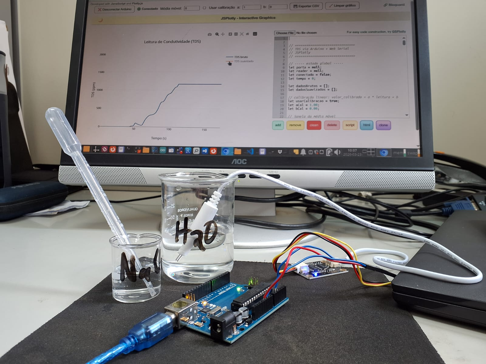
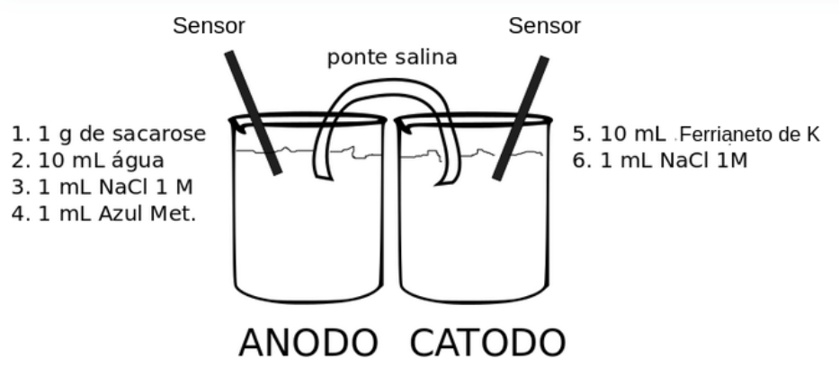
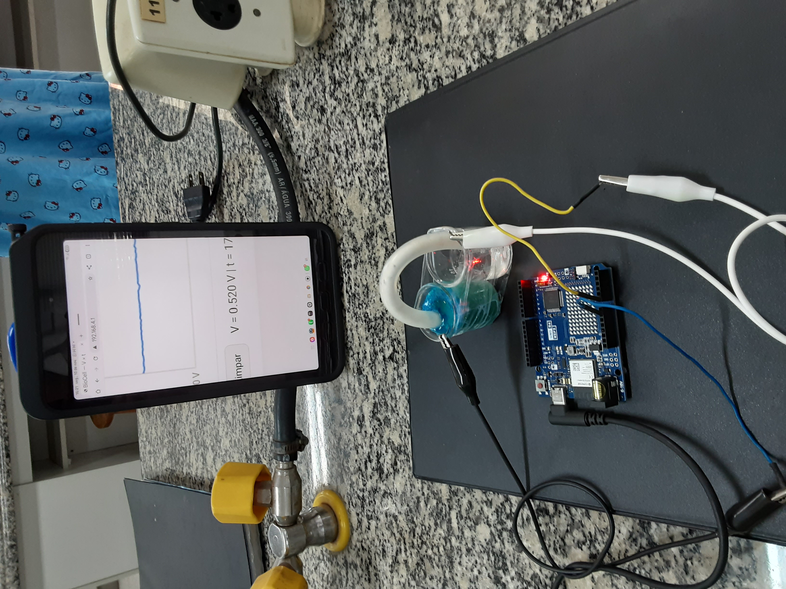

11 Físico
11.1 Celular - Aquisição de dados de sensores
11.2 Arduino - Aquisição de dados de condutivimetria
BNCC: EM13CNT201, EM13CNT308, M13CNT301, M13CNT302

Instruções:
- Para conexão Web Serial é necessário instalação de Python ao computador (Windows ou Linux), e setup de servidor local. Para Windows baixe e instale o arquivo oficial para Python, lembrando-se de clicar em Add Python to PATH, e digite os comandos no CMD dentro da pasta do aplicativo autônomo. Segue a orientação para Linux:
- Conecte o Arduino e componentes (sonda TDS, recipiente com água e sal);
- Feche a IDE do Arduíno;
- Abra um Terminal na pasta do aplicativo autônomo do JSPlotly para Arduino (condutiv_JSPlotly.html; clicar na imagem);
- Digite: python3 -m http.server
- Abra o html autônomo do circuito no Chrome. Obs: Firefox bloqueia;
11.3 Biocélula a Combustível Interfaceada com Arduino (serial ou IoT)
Este protocolo objetiva avaliar a operação de uma biocélula a combustível conectada com placas Arduino. Esse dispositivo permite verificar a geração de eletricidade a partir do fluxo de elétrons que são gerados pela oxidação de uma fonte de carbono pelo metabolismo celular, onde participam ativamente mediadores endógenos (NADH, por exemplo) e exógenos (azul de metileno). Para o modo Wifi é necessário um módulo adicional homônimo, ou uso de placa condizente (ex: Arduino Uno R4 Wifi, ESP32).
11.3.1 Célula eletroquímica
- De posse da célula eletroquímica montada com 2 béqueres unidos, conforme a figura abaixo, adicione sequencialmente os compostos 1 a 6 em cada câmara (anodo, catodo), conforme o esquema que segue. Nota: antes de adicionar o azul de metileno, garanta a dissolução da sacarose.

- Introduzir um sensor de aço inox em cada béquer.
- Com auxílio do par de cabos e jacarés, conectar os sensores ao Arduino conforme segue:
- Sensor do anodo (biocélula) - GND (Arduino);
- Sensor do catodo (biocélula) - Terminal A0 (Arduino)
- Submergir as extremidades da ponte salina, uma em cada câmara da biocélula.
11.3.2 Conexão por Wifi com celular Android/iOS
- Conectar o Arduino
- Carregar o sketch
- Abrir o Serial Monitor
- Opcional: apertar Reset por ~2s no Arduino
- Acessar a rede específica no celular Em Wifi, escolher Biocel-no. da placa Arduino (Ex: Biocell-02) Senha: 12345678
- Abrir o link http://192.168.4.1
